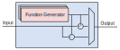

Signal Injection¶
The AMDC is designed to run control algorithms implemented in C-code. Control algorithms can usually be described in block digram form where signals flow between various blocks. Injecting and manipulating signals as they flow is often useful for validation of controllers.
For easy signal injection, the AMDC firmware library includes a module called sys/injection which handles the common signal creation and user command interface.
Users can easily build numerous injection points into their controller code.
The remainder of this document explains how to add injection points, how to use the injection module, and example use cases.
See also
Injections pair nicely with Signal Logging!
What Are Injections?¶
Injections refer to adding or modifying signals in a control algorithm. For each location a signal is modified, a so-called injection point is added. Each injection point can be visualized as a block which takes an optional input and provides an output. Internally, the injection point block computes a prescribed function and combines it with the input signal to create the output signal. The output combination can either replace or augment the input signal.
Each injection point can be visualized like this:
Each Function Generator block in the stack implements one type of function: constant, white noise, triangle, square, chirp, sine, etc.
The output is formed via the mux selecting either: (i) just the function generator output, or (ii) a sum/difference of the function generator output with the input signal.
These blocks are generic and can be used many times through-out a control algorithm.
Note that, by default, the injection point is “disabled” and acts as a pass-through – the output signal is the input signal. The user must manually enable the injection during operation.
Example Use Cases¶
Consider the following (typical) control structure:
The Controller tries to regulate the Output to match the Reference.
The Controller Output is applied to the Plant, along with the Disturbance.
The total applied input to the plant is called the Plant Input.
Use Case 1: References¶

The first use case is to place an injection point supplying the Reference signal.
Doing so allows generic signals to be commanded to the system, such as constants, noise, etc.
This could be implemented in “user-land” as a custom command, but building on top of the injection module is much easier.
Use Case 2: Controller Output¶
By inserting an injection point for the Controller Output, the injection can be used to either add a simulated disturbance, or to replace the controller and apply open-loop inputs to the Plant.
Disturbance¶
If the injection point is configured to sum the internal function with the input signal, this injection point effectively adds an artificial disturbance to the system. This can be used to estimate the controller’s disturbance rejection properties.
Open-Loop Plant Input¶
If the injection point is configured to override the input signal and simply use the internal function generator output as the block output, the controller is effectively disabled and the injection point allows the user to apply arbitary inputs to the plant. Remember that this is possible without any changes to the running control code; after an injection point is added (while writting the C-code), it can be activated any time.
Use Case 3: Non-Ideal Sensor¶
The first two use cases are the most common places to add injection points. However, they can be added anywhere and everywhere in the control algorithm! For example, adding an injection point inline with the sensor feedback can be used to emulate sensor offsets or noise.
In general, you might consider adding injection points to all signals flowing in the controller.
Adding Injection Points to C-Code¶
Now that you understand injection points and how they can be used in control algorithms, we will discuss how to modify the C-code.
All relevant system code can be found in the sys/injection and sys/cmd/cmd_inj modules.
Step 1: Create Context¶
You must create a context for each injection point.
The context is of type inj_ctx_t.
Normally, these are static variables defined within task C files.
For example, in task_foo.c:
#include "sys/injection.h"
// ...
// Array of 4 contexts (i.e., 4 injection points)
static inj_ctx_t inj_ctx_ctrl[4] = { 0 };
// ...
Hint
If you receive code complilation errors, make sure you have enabled the injection module in app_cpu1/usr/user_config.h by editting the USER_CONFIG_ENABLE_INJECTION define.
Step 2: Initialize and Register Context¶
Next, you need to initialize and register the context once when the system boots.
You will need to determine suitable ASCII names for each injection point.
These strings will be typed into the commands so the system knows which injection point is being used.
For example, Iq* might mean the q-axis current reference.
For example, in task_foo.c:
void task_foo_init(void)
{
// ...
// Initialize signal injection points
injection_ctx_init(&inj_ctx_ctrl[0], "Id*");
injection_ctx_init(&inj_ctx_ctrl[1], "Iq*");
injection_ctx_init(&inj_ctx_ctrl[2], "Tem*");
injection_ctx_init(&inj_ctx_ctrl[3], "omega_m*");
// Register all signal injection points
for (int i = 0; i < ARRAY_SIZE(inj_ctx_ctrl); i++) {
injection_ctx_register(&inj_ctx_ctrl[i]);
}
// ...
}
void task_foo_clear(void)
{
// ...
// Clear all injection points
for (int i = 0; i < ARRAY_SIZE(inj_ctx_ctrl); i++) {
injection_ctx_clear(&inj_ctx_ctrl[i]);
}
// ...
}
Step 3: Inject During Callback¶
Finally, you use the injection points by calling injection_inj() once per callback, once per injection point.
This function requires 3 arguments:
Pointer to the variable into which you want to inject
Pointer to the injection context
Timestep length since last calling the function (i.e.
Ts)
For example, in task_foo.c:
static double Id_star = 0;
static double Iq_star = 0;
static double Tem_star = 0;
static double omega_m_star = 0;
void task_foo_callback(void)
{
// ...
// Perform signal injections
injection_inj(&Id_star, &inj_ctx_ctrl[0], Ts);
injection_inj(&Iq_star, &inj_ctx_ctrl[1], Ts);
injection_inj(&Tem_star, &inj_ctx_ctrl[2], Ts);
injection_inj(&omega_m_star, &inj_ctx_ctrl[3], Ts);
// Now, the local variables have the signal contents
// injected into them as requested by the user.
// ...
}
Using Injection Commands¶
Now that the C-code has been instrumented for signal injection, the inj commands can be used.
Per the help output, the inj sub-commands are:
clear- Clear all injectionslist- List all available injection pointsconst <name> <set|add|sub> <value>- Inject a constantnoise <name> <set|add|sub> <gain> <offset>- Inject noisechirp <name> <set|add|sub> <gain> <freqMin> <freqMax> <period>- Inject chirptriangle <name> <set|add|sub> <valueMin> <valueMax> <period>- Inject trianglesquare <name> <set|add|sub> <valueMin> <valueMax> <period>- Inject square
Start by typing inj list to see all registered injection points.
Next, to clear previous injections, type inj clear.
To inject a signal, all commands follow a similar flavor.
First, determine the type of signal (e.g., noise).
Next, determine the signal name, as defined in the register() command in the C-code.
For the previous example, Id* and Iq* would be valid.
Then, determine if the signal generator should override (i.e., set) or sum (i.e., add/sub) with the input signal.
Finally, determine the parameters for the specific function generator.
Note that parameter values can be entered in normal decimal format, or scientific format.
For example, to specify 1 micro-unit, type either 0.000001 or 1e-6.
Constant Injection¶
Example constant injection where the gain = 0.6:
Syntax: inj const <name> <set|add|sub> <value>
The most basic injection.
Only requires specifying the constant value. The units of the value are relative to the control variable.
Noise Injection¶
Example noise injection where the gain = 0.3 and the offset = 0.5:
Syntax: inj noise <name> <set|add|sub> <gain> <offset>
Injects white noise into the signal.
The noise is computed using rand() (ranges from -1.0 to 1.0) and is scaled to +/- gain.
The offset is summed with the noise to provide average-valued noise.
Note: noise injection with gain = 0 and offset = G is the same as constant injection with value = G.
Chirp Injection¶
Example chirp injection where the gain = 0.6, freqMin = 1, freqMax = 3, and period = 5:
Syntax: inj chirp <name> <set|add|sub> <gain> <freqMin> <freqMax> <period>
Injects a linear chirp signal that ramps up and down in frequency, i.e., a back-to-back chirp. Ideally, there are no discontinuities in the output.
The frequency values (freqMin and freqMax) are in Hz and period is in seconds.
The chirp implementation ramps the frequency from the min to max value over period/2 seconds, then ramps from the max to min frequency over the second half of the period.
This allows for continuous output.
The gain value is in units relative to the injected control variable.
Note that a chirp can become a simple sinusoid by setting the min and max frequency equal and an appropriate period. The period should be set such that it does not clip the sinusoidal output, i.e., period should contain an integer number of complete waveforms.
Triangle Injection¶
Example triangle injection where the valueMin = 0.35, valueMax = 0.85, and period = 0.65:
Syntax: inj triangle <name> <set|add|sub> <valueMin> <valueMax> <period>
Injects a triangle wave ranging from the min value to the max value and back, over the period. The waveform starts at the mid-value between min and max.
The period parameter is in seconds.
Square Injection¶
Example square injection where the valueMin = 0.3, valueMax = 0.8, and period = 0.75:
Syntax: inj square <name> <set|add|sub> <valueMin> <valueMax> <period>
Injects a square wave going from the min value to the max value and back, over the period. The waveform starts at the min value. The duty cycle is 50%.
The period parameter is in seconds.